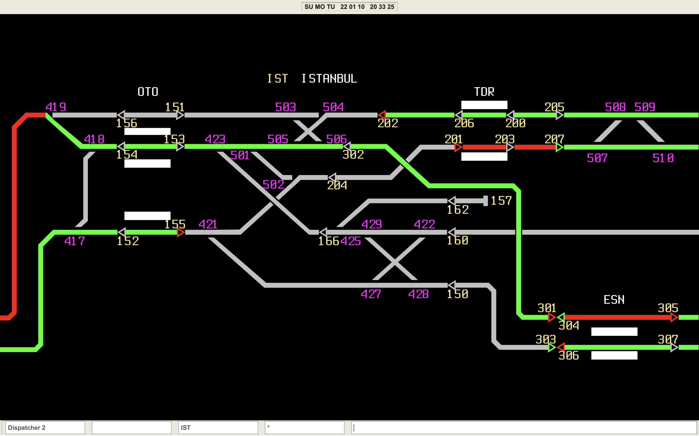

Web-based simulation of the EBICOS 900 traffic management and dispatching system
DispatchStation simulates the CITYFLO 250 signalling system which is used in the Istanbul Metro's M1 line. Real commands and real track data from the line is included in the simulation.
The following systems are being used in the line:
EBILOCK 950 - Main Interlocking
EBICOS 900 / MAN 90 - TMS and Dispatching System
EBICAB 700 - Automatic Train Control (ATC) System
The simulation is written in JavaScript, is open source and can run on any web browser
 Screenshot of the simulation